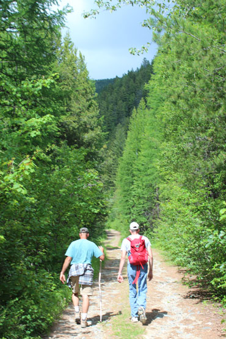
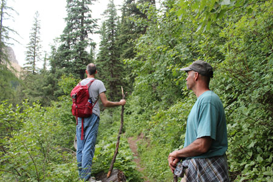
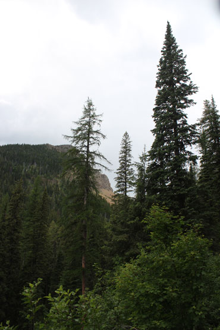
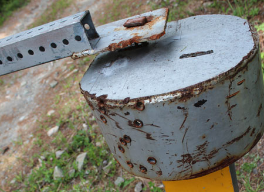
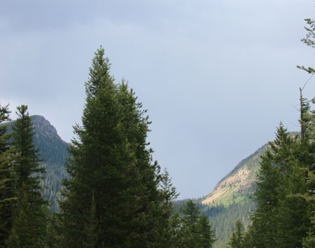
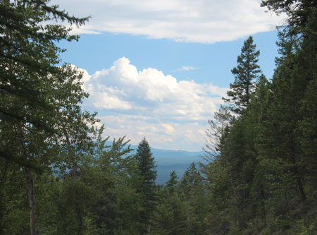
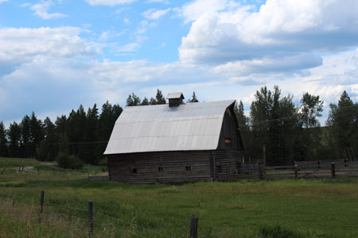
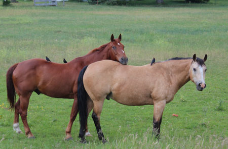

June 14, 2015
| The day after his daughter's wedding, Dan
needed to get outdoors and relax a bit. We went along on a hike
toward Therriault Pass, which was made a bit longer by the fact that the
gate was still closed which prevented us from driving to the
trailhead. Often at this time of year there is too much snow to
allow cars up there, but it was a HOT June this year, there was no hint of
snow anywhere. Poor Dan didn't get much exercise because of us flat-landers,
but it was still a nice time hanging out together. |
|
 |
 |
| Heading up the road we weren't allowed to drive on | Taking a look at the pass before we turned around |
 |
|
| Therriault Pass | I forgot what plant this was now, but aren't they cute mini pinecones? |
 |
|
| Some high-powered ammo had been shot into the gate | A lovely flower along the path |
 |
 |
| Another look at the pass | Driving out |
 |
 |
| Scenery on the drive home | Everyone's resting - horses, birds, it's all good |